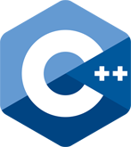

C++نظرة عامة على لغة C++
هل أنا جاهز لتعلم لغة C++ ؟
إذا كنت مبتدئاً في البرمجة, يجب أن تدرس الخوارزميات قبل أن تبدأ مباشرةً بدراسة لغة C++, لأنك بحاجة لمعرفة مبادئ البرمجة قبل أن تتعلم أي لغة برمجة.
لا تقلق إذا لم يسبق لك أن تعلمتها لأننا شرحنا الخوارزميات من الصفر.
تعلم الخوارزميات »
نصيحة
لا تحاول تعلم لغة C++ ما لم تتعلم الخوارزميات قبلها لأنك قد تواجه صعوبة كبيرة في فهم الكود أحياناً حتى لو كان الكود مشروح بتفصيل و سهل الفهم.
و قم بدراسة جميع الدروس بنفس الترتيب الموضوعين فيه لأننا شرحنا جميع الأفكار بشكل مترابط.
ما هي لغة C++ ؟
C++ تكتب سي بلاس بلاس باللغة العربية و هي لغة برمجة تجميعية ( Compiled ) و كائنية ( Object Oriented ) تضم العديد من مميزات لغات البرمجة عالية المستوى ( High Level ) و منخفضة المستوى ( Low Level ) و هذا يعني أنك قادر على فعل ما تشاء بها.
هذه اللغة الرائعة مصممة لتعمل على جميع أنظمة التشغيل المعروفة مثل ويندوز, ماك, لينكس, إندرويد إلخ.. و هي تعتبر من أقوى و أشهر لغات البرمجة على الإطلاق و يطلق عليها "أم اللغات" نظراً لأنها لغة قوية و موجودة منذ زمن طويل.
تم بناء هذه اللغة بالأساس كتطوير للغة C من قبل Bjarne Stroustrup أثناء عمله في مختبرات Bell لتكون أطروحته في رسالة الدكتورا عام 1979.
من ذلك الحين و حتى وقتنا الحالي تم تطوير هذه اللغة بشكل مستمر و اخر إصدار رسمي لها هو C++ 17.
لا يوجد شعار رسمي للغة C++ و لكن في العادة و عند البحث عن دورات لتعلمها أونلاين فإنك تجدهم يستخدموا شعار يشبه التالي.

ماذا يمكنني ان أطور بلغة C++ ؟
لغة C++ تعتبر لغة عامة الهدف ( General Purpose ) مما يعني انها قادرة على بناء أي برنامج.
القوة الحقيقة لها تتجلى في المشاريع والبرامج الكبيرة مثل:
بناء و تطوير انظمة التشغيل ومن اشهر انظمة التشغيل المبنية بهذه اللغة Windows, Linux, MacOS, Android.
بناء و تطوير البرامج الكبيرة مثل برامج أدوبي ( مثل Photoshop و Premier ) و المتصفح Firefox.
بناء و تطوير الالعاب و من أشهر الألعاب التي طورت بهذه اللغة Counter Strike, MacOSDoom, Warcraft.
مميزات لغة C++ بالنسبة للمطورين
لها شعبية هائلة و هناك الكثير من المراجع لمن يريد تعلمها.
القدرة على التحكم باستخدام الذاكرة بشكل كبير.
خفيفة وسريعة وتستهلك موارد نظام أقل مقارنة بلغات مثل جافا وبايثون.
بالامكان تحويل كود مكتوب بلغة C لكود بلغة C++ بسهولة.
مميزات لغة C++ عن باقي لغات البرمجة
مفتوحة المصدر
لن تدفع أي مبلغ لتعمل على لغة C++, فهي مصدر مفتوح و مجانية و ستبقى مجانية مدى الحياة.
خفيفة
تستطيع البرمجة بها حتى و لو كان حاسوبك ضعيفاً أو قديماً.
البساطة
تعلمها سهل جداً بعد أن تفهم برمجة الكائنات.
سرعة الترجمة
تتم ترجمة لغة C++ إلى أوامر يفهمها الجهاز بشكل سريع جداً.
لغة كائنية ( Object Oriented )
مع أن لغة C++ صممت لتكون قريبة من عتاد الجهاز و قريبة للغات منخفضة المستوى إلا أنها تتيح لمستخدمها بناء الكلاسات والتعامل معها بطرق منهجيات البرمجة الكائنية ( OOP ) مثل الوراثة و تعدد الأشكال و غيرها من المبادئ التي ستتعلمها لاحقاً في الدورة.
متعددة النماذج
تسمح لغة C++ لمستخدمها باختيار الطريقة المناسبة له لكتابة الكود البرمجي من بين عدة نماذج مختلفة مثل النموذج الهيكلي ( Structural ) الشبيهة بلغة C والنموذج الكائني ( Object Oriented ) الشبيه بلغة جافا.
الدعم الكبير
لغة C++ من اللغات القديمة نسبيا والمنتشرة بشكل كبير مما جعل منها لغة ذات شعبية كبيرة و مصادر تعلم مختلفة و متعددة و دعم كبير من قبل مجتمع المطورين.
لمن تم إعداد هذا المرجع؟
تم إعداد هذا المرجع ليتلاءم مع جميع الأشخاص الذين يريدون التعلم.
إذاً سواء كنت هاوياً, طالباً أو مبرمجاً, فإن هذا المرجع سيساعدك على فهم أساسيات لغة C++ و الوصول إلى مستوى متقدم جداً.
في الدرس التالي سنرشدك لتحميل الأدوات التي سنستخدمها لبناء و تشغيل كود C++ على حاسوبك.


 محرر الويب
محرر الويب نظام الألوان
نظام الألوان محول الوحدات
محول الوحدات محلل عناوين الشبكات
محلل عناوين الشبكات